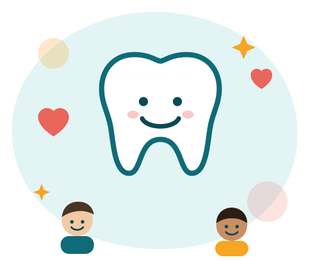

Captação e retenção:
Poucas frentes de divulgação dificultam atrair e manter doadores.
O Hub TdB é uma proposta de site único para conectar quem doa, quem cuida e quem coordena a Turma do Bem, ajudando a ONG a atender mais pessoas.
Portal do Doador Portal do Voluntário
Poucas frentes de divulgação dificultam atrair e manter doadores.
O contato inicial é manual, por e-mail, e as plataformas não se integram.
Faltam ferramentas de gestão para aumentar o número de atendimentos.
É difícil mostrar a doadores a importância da saúde bucal.
Acompanhe o tratamento de quem você ajuda e faça doações.
Dentistas registram o prontuário e acompanham seus pacientes.
A equipe da TdB gerencia cadastros e relatórios.